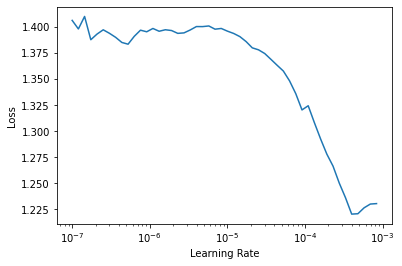
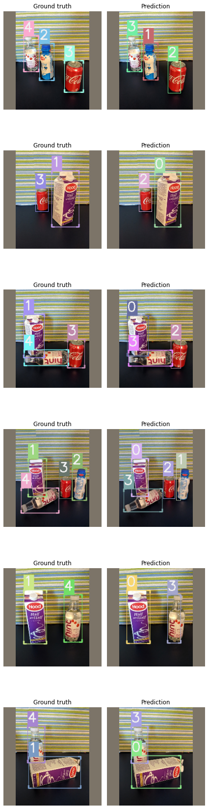
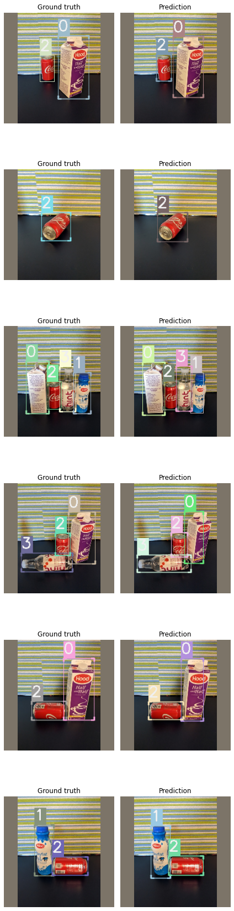

mmdetection train Copy2
%load_ext autoreload
%autoreload 2
from icevision.all import *
# model_type = models.torchvision.faster_rcnn
# model_type = models.ross.efficientdet
model_type = models.mmdet.faster_rcnn
# model_type = models.mmdet.retinanet
data_dir = icedata.fridge.load_data()
parser = icedata.fridge.parser(data_dir)
train_records, valid_records = parser.parse()
presize, size = 256, 224
train_tfms = tfms.A.Adapter([*tfms.A.aug_tfms(presize=presize, size=size), tfms.A.Normalize()])
valid_tfms = tfms.A.Adapter([*tfms.A.resize_and_pad(size=size), tfms.A.Normalize()])
train_ds = Dataset(train_records, train_tfms)
valid_ds = Dataset(valid_records, valid_tfms)
train_dl = model_type.train_dl(train_ds, batch_size=8, num_workers=4, shuffle=True)
valid_dl = model_type.valid_dl(valid_ds, batch_size=8, num_workers=4, shuffle=False)
from mmcv import Config
from mmdet.models import build_detector
# cfg = Config.fromfile("~/git/mmdetection/configs/faster_rcnn/faster_rcnn_r50_fpn_1x_coco.py")
# cfg.model.roi_head.bbox_head.num_classes = len(parser.class_map) - 1
# cfg.model.pretrained = "/home/lgvaz/git/mmdetection/checkpoints/faster_rcnn_r50_fpn_1x_coco_20200130-047c8118.pth"
from mmcv.runner import load_checkpoint
def model_fn(cfg, num_classes:int, weights_path:Optional[Union[str, Path]]=None):
cfg.model.bbox_head.num_classes = num_classes - 1
if weights_path is not None:
cfg.model.pretrained = None
_model = build_detector(cfg.model, cfg.train_cfg, cfg.test_cfg)
if weights_path is not None:
load_checkpoint(_model, str(weights_path))
return _model
cfg = Config.fromfile("~/git/mmdetection/configs/retinanet/retinanet_r50_fpn_1x_coco.py")
# cfg.model.bbox_head.num_classes = len(parser.class_map) - 1
# cfg.model.pretrained = None
weights_path = "/home/lgvaz/git/mmdetection/checkpoints/retinanet_r50_fpn_1x_coco_20200130-c2398f9e.pth"
cfg = Config.fromfile("~/git/mmdetection/configs/faster_rcnn/faster_rcnn_r50_fpn_1x_coco.py")
# cfg.model.roi_head.bbox_head.num_classes = len(parser.class_map) - 1
cfg.model.roi_head
# cfg = Config.fromfile("~/git/mmdetection/configs/retinanet/retinanet_r50_fpn_1x_coco.py")
# fcos
# cfg = Config.fromfile("~/git/mmdetection/configs/fcos/fcos_r50_caffe_fpn_4x4_1x_coco.py")
model = model_fn(cfg, num_classes=len(parser.class_map), weights_path=weights_path)
0%| | 0/128 [00:00<?, ?it/s]
[1m[1mINFO [0m[1m[0m - [1m[34m[1mAutofixing records[0m[1m[34m[0m[1m[0m | [36micevision.parsers.parser[0m:[36mparse[0m:[36m131[0m
{'type': 'StandardRoIHead',
'bbox_roi_extractor': {'type': 'SingleRoIExtractor',
'roi_layer': {'type': 'RoIAlign', 'output_size': 7, 'sampling_ratio': 0},
'out_channels': 256,
'featmap_strides': [4, 8, 16, 32]},
'bbox_head': {'type': 'Shared2FCBBoxHead',
'in_channels': 256,
'fc_out_channels': 1024,
'roi_feat_size': 7,
'num_classes': 80,
'bbox_coder': {'type': 'DeltaXYWHBBoxCoder',
'target_means': [0.0, 0.0, 0.0, 0.0],
'target_stds': [0.1, 0.1, 0.2, 0.2]},
'reg_class_agnostic': False,
'loss_cls': {'type': 'CrossEntropyLoss',
'use_sigmoid': False,
'loss_weight': 1.0},
'loss_bbox': {'type': 'L1Loss', 'loss_weight': 1.0}}}
The model and loaded state dict do not match exactly
learn = model_type.fastai.learner(dls=[train_dl, valid_dl], model=model, splitter=fastai.trainable_params)
learn.lr_find()
size mismatch for bbox_head.retina_cls.weight: copying a param with shape torch.Size([720, 256, 3, 3]) from checkpoint, the shape in current model is torch.Size([36, 256, 3, 3]).
size mismatch for bbox_head.retina_cls.bias: copying a param with shape torch.Size([720]) from checkpoint, the shape in current model is torch.Size([36]).
SuggestedLRs(lr_min=3.981071640737355e-05, lr_steep=0.00010964782268274575)

learn.fine_tune(10, 3e-4)
| epoch | train_loss | valid_loss | time |
|---|---|---|---|
| 0 | 1.338621 | 1.231623 | 00:10 |
| epoch | train_loss | valid_loss | time |
|---|---|---|---|
| 0 | 0.949117 | 0.623754 | 00:04 |
| 1 | 0.709892 | 0.524238 | 00:04 |
| 2 | 0.590438 | 0.352810 | 00:04 |
| 3 | 0.515179 | 0.282649 | 00:04 |
| 4 | 0.452689 | 0.257211 | 00:04 |
| 5 | 0.406142 | 0.203727 | 00:04 |
| 6 | 0.356148 | 0.174192 | 00:04 |
| 7 | 0.320793 | 0.165395 | 00:04 |
| 8 | 0.287955 | 0.152181 | 00:04 |
| 9 | 0.263192 | 0.151012 | 00:04 |
learn.fine_tune(10, 3e-4)
| epoch | train_loss | valid_loss | time |
|---|---|---|---|
| 0 | 1.471645 | 1.170488 | 00:09 |
| epoch | train_loss | valid_loss | time |
|---|---|---|---|
| 0 | 1.012454 | 0.598085 | 00:04 |
| 1 | 0.749190 | 0.356465 | 00:04 |
| 2 | 0.601603 | 0.303624 | 00:04 |
| 3 | 0.508633 | 0.282804 | 00:04 |
| 4 | 0.449279 | 0.230972 | 00:04 |
| 5 | 0.402990 | 0.221252 | 00:04 |
| 6 | 0.361866 | 0.195968 | 00:05 |
| 7 | 0.327366 | 0.193240 | 00:05 |
| 8 | 0.300898 | 0.156310 | 00:05 |
| 9 | 0.278628 | 0.156241 | 00:04 |
model_type.show_results(model, valid_ds)

learn.model.cuda();
samples = [valid_ds[i] for i in range(3)]
batch, samples = model_type.build_infer_batch(samples)
preds = model_type.predict(model, batch, detection_threshold=.3)
preds
model_type.show_results(model, valid_ds, detection_threshold=.5)
[{'scores': array([], dtype=float32),
'labels': array([], dtype=int32),
'bboxes': []},
{'scores': array([], dtype=float32),
'labels': array([], dtype=int32),
'bboxes': []},
{'scores': array([], dtype=float32),
'labels': array([], dtype=int32),
'bboxes': []}]

# learn.save('fridge')
learn.load('fridge')
class LitModel(model_type.lightning.ModelAdapter):
def configure_optimizers(self):
return Adam(self.parameters(), lr=1e-4)
lit_model = LitModel(model)
trainer = pl.Trainer(max_epochs=10, gpus=1, num_sanity_val_steps=0, check_val_every_n_epoch=1)
lr_finder = trainer.tuner.lr_find(lit_model, train_dl, valid_dl)
<fastai.learner.Learner at 0x7f18d1fa8810>
GPU available: True, used: True
TPU available: None, using: 0 TPU cores
LOCAL_RANK: 0 - CUDA_VISIBLE_DEVICES: [0]
fig = lr_finder.plot(suggest=True)
fig.show()
| Name | Type | Params
-------------------------------------
0 | model | FasterRCNN | 41.4 M
-------------------------------------
41.1 M Trainable params
225 K Non-trainable params
41.4 M Total params
/home/lgvaz/miniconda3/envs/mmlab/lib/python3.7/site-packages/pytorch_lightning/utilities/distributed.py:49: UserWarning: The dataloader, train dataloader, does not have many workers which may be a bottleneck. Consider increasing the value of the `num_workers` argument` (try 8 which is the number of cpus on this machine) in the `DataLoader` init to improve performance.
warnings.warn(*args, **kwargs)
/home/lgvaz/miniconda3/envs/mmlab/lib/python3.7/site-packages/pytorch_lightning/utilities/distributed.py:49: UserWarning: The dataloader, val dataloader 0, does not have many workers which may be a bottleneck. Consider increasing the value of the `num_workers` argument` (try 8 which is the number of cpus on this machine) in the `DataLoader` init to improve performance.
warnings.warn(*args, **kwargs)
Finding best initial lr: 0%| | 0/100 [00:00<?, ?it/s]
LR finder stopped early due to diverging loss.
Restored states from the checkpoint file at /home/lgvaz/git/icevision/notebooks/lr_find_temp_model.ckpt
/home/lgvaz/miniconda3/envs/mmlab/lib/python3.7/site-packages/ipykernel_launcher.py:2: UserWarning: Matplotlib is currently using module://ipykernel.pylab.backend_inline, which is a non-GUI backend, so cannot show the figure.

trainer.fit(lit_model, train_dl, valid_dl)
# torch.save(lit_model.state_dict(), 'tmp.pt')
# state_dict = torch.load('tmp.pt')
# lit_model.load_state_dict(state_dict)
model = model.eval().cpu()
infer_dl = mmdetection_models.infer_dl(valid_ds, batch_size=1, shuffle=False)
batch, samples = first(infer_dl)
results = model(return_loss=False, rescale=False, **batch)[0]
pred = mmdetection_models.convert_raw_prediction(results, .5)
show_pred(samples[0]['img'], pred)
| Name | Type | Params
------------------------------------
0 | model | RetinaNet | 36.4 M
------------------------------------
36.2 M Trainable params
225 K Non-trainable params
36.4 M Total params
Training: | | 0/? [00:00<?, ?it/s]
Validating: | | 0/? [00:00<?, ?it/s]
Validating: | | 0/? [00:00<?, ?it/s]
Validating: | | 0/? [00:00<?, ?it/s]
Validating: | | 0/? [00:00<?, ?it/s]
Validating: | | 0/? [00:00<?, ?it/s]
Validating: | | 0/? [00:00<?, ?it/s]
Validating: | | 0/? [00:00<?, ?it/s]
Validating: | | 0/? [00:00<?, ?it/s]
Validating: | | 0/? [00:00<?, ?it/s]
Validating: | | 0/? [00:00<?, ?it/s]
1
<All keys matched successfully>

from copy import deepcopy
class Parent:
def __init__(self):
self.obj = {'a': 'b'}
self.items = [{'foo': 'bar', 'obj': self.obj} for _ in range(5)]
orig = Parent()
orig.items[0]['obj'] is orig.obj
copied = deepcopy(orig)
copied.items[0]['obj'] is copied.obj
test = [orig.obj for _ in range(3)]
test_copy = deepcopy(test)
test_copy[0] is test_copy[1]
test_copy[0]['c'] = 'test'
test_copy[1]
True
True
True
{'a': 'b', 'c': 'test'}